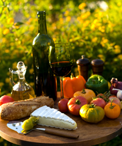

How It All Began | Native Cooking of Utah Goes Online | Looking to the Future | Press Releases
Native Cooking of Utah started in a small Salt Lake City kitchen in 2008. Founder Maria Lopez wanted to preserve and share the regional recipes she learned from her grandmother—dishes that blended Native American, pioneer, and modern Utah ingredients.
What began as weekend cooking classes quickly grew into a community of home cooks who valued authenticity, local produce, and the stories behind every recipe. Today the site reaches thousands of visitors each month who come for reliable techniques, seasonal menus, and the warm hospitality that defines Utah cooking.

Our earliest events featured open-fire Dutch-oven cooking and hands-on workshops using ingredients grown in Utah’s valleys and high deserts. Those gatherings remain the heart of everything we do.

In 2015 we launched the website so that cooks everywhere could access the same recipes, tips, and cultural notes we shared in person. The online collection now includes step-by-step guides, seasonal calendars, and video demonstrations filmed in real Utah kitchens.
Visitors can explore traditional methods side-by-side with modern adaptations that keep the flavors true while fitting today’s busy schedules.
We continue to expand our library of recipes and plan new community workshops across the state. Our goal remains simple: keep Utah’s culinary heritage alive and make it accessible to the next generation of cooks.